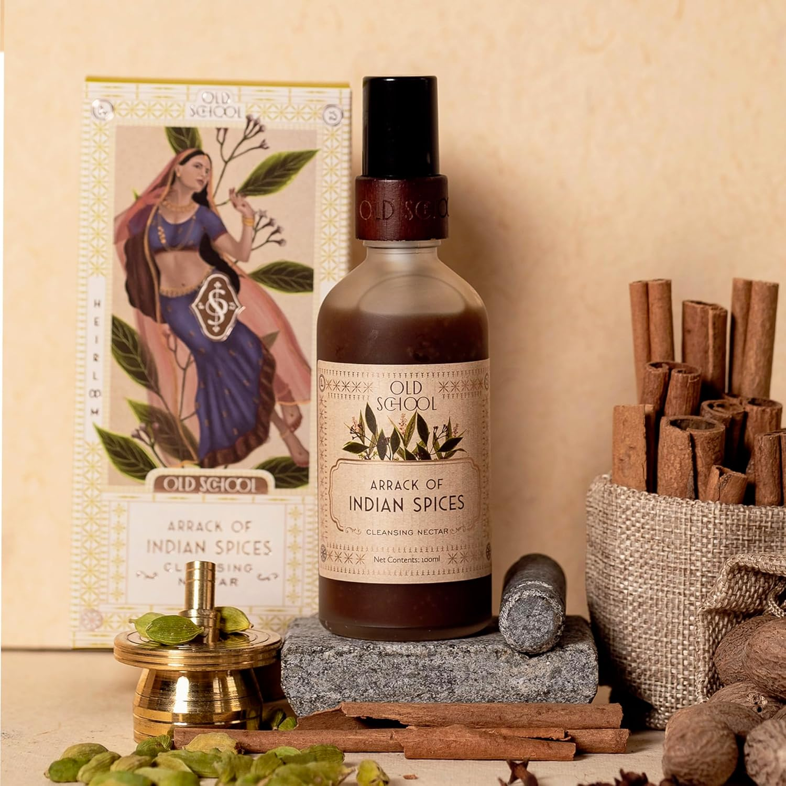

Indian Spices Cleansing Nectar
Inclusive of all taxes
"Ancient spices meet modern cleansing for a spot-free glow."
Reclaim your skin's purity with this spice-infused nectar. Designed specifically to target **acne-prone skin** and **dark spots**, this face wash uses a potent blend of Indian spices to pull out impurities while maintaining your skin's moisture balance. It's the ultimate ritual for a clear, refined complexion.
As an Amazon Associate, I earn from qualifying purchases.
Why We Love It
It smells like a literal spice garden! Beyond the sensory experience, it is incredibly effective at calming active breakouts and brightening dull areas. It leaves the skin feeling "squeaky clean" but surprisingly soft—never stripped or tight.
How to Use
- 01 Wet your face with lukewarm water.
- 02 Pump a small amount of nectar and massage in circular motions.
- 03 Focus on the T-zone and congested areas. Rinse and pat dry.
Who It's For
- Oily and Acne-prone skin types.
- Those struggling with stubborn post-acne dark spots.
- Ideal for dry skin looking for a non-stripping deep cleanse.